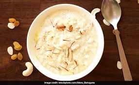

1. First, wash the rice thoroughly with clean water to remove excess starch and soak it for a few minutes. Meanwhile, boil full cream milk in a large thick-bottomed vessel while stirring continuously so the milk does not stick to the bottom. Once the milk starts boiling, add the soaked rice slowly and mix properly. Cooking the rice slowly in milk helps the kheer become rich, creamy, and naturally flavorful.
2. Continue cooking the rice and milk mixture on low flame while stirring regularly. The rice should become very soft and absorb the milk completely. Slow cooking is very important because it thickens the kheer naturally and gives it a delicious traditional taste. The milk gradually becomes creamy and rich as it reduces in quantity.
3. Add sugar to the cooked rice mixture and stir continuously until the sugar dissolves completely. Once sugar is added, the kheer becomes slightly thinner, so continue boiling for a few more minutes until it thickens again. Add cardamom powder and saffron strands to enhance the aroma and give the kheer a royal flavor and attractive golden color.
4. Heat a small amount of ghee in a separate pan and fry cashew nuts, almonds, raisins, and pistachios until golden brown. Frying dry fruits in ghee increases their crunchiness and gives the kheer a rich festive taste. Add these roasted dry fruits into the kheer and mix gently.
5. Continue simmering the kheer for a few more minutes so all the flavors combine perfectly. The dry fruits, saffron, and cardamom spread their aroma throughout the dessert, making it more delicious and flavorful. The texture should become creamy and slightly thick without becoming too heavy.
6. Once the kheer reaches the perfect consistency, turn off the flame and allow it to cool slightly. As the kheer cools, it naturally becomes thicker and creamier. You can adjust the consistency by adding a little warm milk if needed before serving.
7. Transfer the kheer into serving bowls and garnish with extra chopped pistachios, almonds, saffron strands, and raisins for a rich and attractive presentation. The colorful garnish makes the dessert look festive and special for celebrations and family gatherings.
8. Finally, serve the special kheer warm or chilled according to your preference. Kheer tastes wonderful during festivals, birthdays, family functions, and traditional occasions. Its creamy texture, rich milk flavor, and delicious sweetness make it one of the most loved Indian desserts enjoyed by people of all ages.
